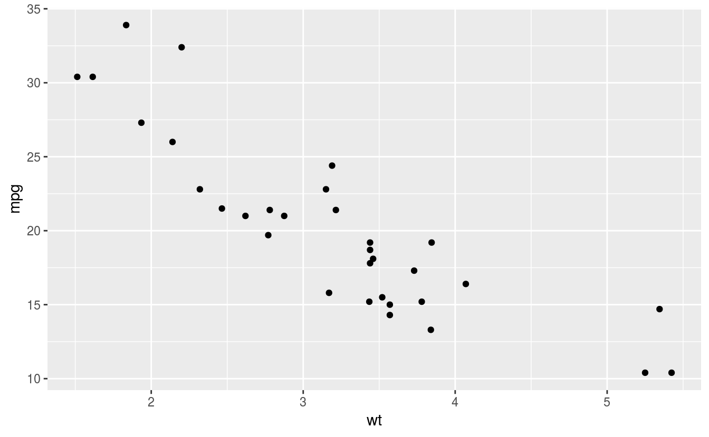
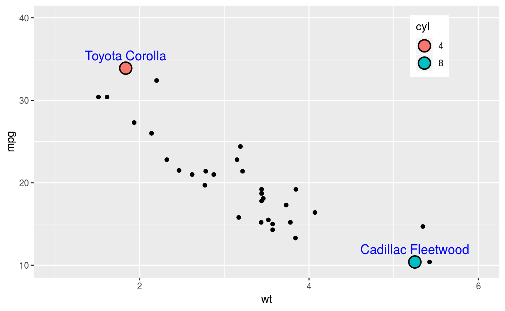

- Blog_1 - Hello World
- Formualting the Question
- Importing and cleaning the data
- Transform and Explore the data
- Lets us visualize the answers to the question
- A. Base plot - shows the impact of weight on mpg
- B. Answers the question - Which cars have maximum and minimum mpg from all the cars in the lot
- C. Answers the question - what is the average mpg for each cylinder group (4, 6, 8)
- D. Answers the question - What are the top 5% mpg cars for each cylinder group
- Summarizing the result of the analysis
- Take away
In this space, I will be sharing my thought on data and data science related subjects that I find interesting and educational. If I find, what I consider to be a good articles from other data enthusiasts and practitioners, I will find space for theme here.
Blog_1 - Hello World
11/04/2019
Picking the subject matter for what I wanted to discuss on the first blog was harder than I thought. At the end, I wanted to pay homage to the mtcars dataset, from 1974 Motor Trend US magazine. A dataset that is frequently used in the data science community to illustrate data analysis concepts. I have used mtcars dataset quite a bit to test tidying, transforming, visualizing, modeling and even machine learning over the years.
Depending on the the question you want answered, and the data type you have on hand, there are many workflow models to choose from when analyzing a data. A typical data analysis model follows a framework similar to what you see on Fig @ref(fig:workflow).
knitr::include_graphics("fig/DataScienceProcess.png")Fig 1: Data science workflow from Harvard University Data Science Course
Without further ado, lets get started with the analysis.
Formualting the Question
The first order of business before starting any analysis is to prepare a set of questions we want to ask our data. The questions should be as detailed as possible, because generic questions tend to not yield actionable responses. In practice, more questions arise once we start digging into the data and know more about what other hidden answers can be extracted. For this blog analysis of mtcars dataset, we will limit the number of question to three for brevity.
Let us set a scenario to help frame the questions:
Suppose you want to purchase a vehicle and walk onto a used car sales lot that has 32 used cars. Each car has its own features such as gas consumption measured by miles per gallon (mpg), number of cylinders (four, six or eight), transmission type (automatic or Manual) etc. In the mtcars dataset there are 11 features listed for each car. To shorten the list to few cars you want to test drive, you have chosen the mpg feature to compare the cars with.
Here are the questions that will help you determine the most efficient mpg from the 32 cars in the lost. 1/ You don’t want to spend too much money on gas, so you want to know “which car has the maximum and which car has the minimum mpg for all the cars in the lot”.
2/ The cars on the lot have either 4, 6 or 8 cylinders. You want to know “what the average mpg for each cylinder group?”
3/ Lastly, you want to know for each cylinder group “which cars are the most fuel efficient - the top 5%”
Now that we have the question on hand, we are ready to examine the data and get the answers we are seeking.
It is assumed the reader has basic understanding of tyidyverse and/or R to follow the script and what it does. To learn more go here
Importing and cleaning the data
On a typical analysis, getting, cleaning and transforming data takes up to 80% of the time. This is critical stage for any analysis, because without targeted quality data, the outcome is pretty much useless. The mtcars dataset is already in tidy format - it is already cleaned up and in a table with distinct rows and the same features assembled in each column.
Take a look at the data (scroll up/down to see all cars and features)| mpg | cyl | disp | hp | drat | wt | qsec | vs | am | gear | carb | |
|---|---|---|---|---|---|---|---|---|---|---|---|
| Mazda RX4 | 21.0 | 6 | 160.0 | 110 | 3.90 | 2.620 | 16.46 | 0 | 1 | 4 | 4 |
| Mazda RX4 Wag | 21.0 | 6 | 160.0 | 110 | 3.90 | 2.875 | 17.02 | 0 | 1 | 4 | 4 |
| Datsun 710 | 22.8 | 4 | 108.0 | 93 | 3.85 | 2.320 | 18.61 | 1 | 1 | 4 | 1 |
| Hornet 4 Drive | 21.4 | 6 | 258.0 | 110 | 3.08 | 3.215 | 19.44 | 1 | 0 | 3 | 1 |
| Hornet Sportabout | 18.7 | 8 | 360.0 | 175 | 3.15 | 3.440 | 17.02 | 0 | 0 | 3 | 2 |
| Valiant | 18.1 | 6 | 225.0 | 105 | 2.76 | 3.460 | 20.22 | 1 | 0 | 3 | 1 |
| Duster 360 | 14.3 | 8 | 360.0 | 245 | 3.21 | 3.570 | 15.84 | 0 | 0 | 3 | 4 |
| Merc 240D | 24.4 | 4 | 146.7 | 62 | 3.69 | 3.190 | 20.00 | 1 | 0 | 4 | 2 |
| Merc 230 | 22.8 | 4 | 140.8 | 95 | 3.92 | 3.150 | 22.90 | 1 | 0 | 4 | 2 |
| Merc 280 | 19.2 | 6 | 167.6 | 123 | 3.92 | 3.440 | 18.30 | 1 | 0 | 4 | 4 |
| Merc 280C | 17.8 | 6 | 167.6 | 123 | 3.92 | 3.440 | 18.90 | 1 | 0 | 4 | 4 |
| Merc 450SE | 16.4 | 8 | 275.8 | 180 | 3.07 | 4.070 | 17.40 | 0 | 0 | 3 | 3 |
| Merc 450SL | 17.3 | 8 | 275.8 | 180 | 3.07 | 3.730 | 17.60 | 0 | 0 | 3 | 3 |
| Merc 450SLC | 15.2 | 8 | 275.8 | 180 | 3.07 | 3.780 | 18.00 | 0 | 0 | 3 | 3 |
| Cadillac Fleetwood | 10.4 | 8 | 472.0 | 205 | 2.93 | 5.250 | 17.98 | 0 | 0 | 3 | 4 |
| Lincoln Continental | 10.4 | 8 | 460.0 | 215 | 3.00 | 5.424 | 17.82 | 0 | 0 | 3 | 4 |
| Chrysler Imperial | 14.7 | 8 | 440.0 | 230 | 3.23 | 5.345 | 17.42 | 0 | 0 | 3 | 4 |
| Fiat 128 | 32.4 | 4 | 78.7 | 66 | 4.08 | 2.200 | 19.47 | 1 | 1 | 4 | 1 |
| Honda Civic | 30.4 | 4 | 75.7 | 52 | 4.93 | 1.615 | 18.52 | 1 | 1 | 4 | 2 |
| Toyota Corolla | 33.9 | 4 | 71.1 | 65 | 4.22 | 1.835 | 19.90 | 1 | 1 | 4 | 1 |
| Toyota Corona | 21.5 | 4 | 120.1 | 97 | 3.70 | 2.465 | 20.01 | 1 | 0 | 3 | 1 |
| Dodge Challenger | 15.5 | 8 | 318.0 | 150 | 2.76 | 3.520 | 16.87 | 0 | 0 | 3 | 2 |
| AMC Javelin | 15.2 | 8 | 304.0 | 150 | 3.15 | 3.435 | 17.30 | 0 | 0 | 3 | 2 |
| Camaro Z28 | 13.3 | 8 | 350.0 | 245 | 3.73 | 3.840 | 15.41 | 0 | 0 | 3 | 4 |
| Pontiac Firebird | 19.2 | 8 | 400.0 | 175 | 3.08 | 3.845 | 17.05 | 0 | 0 | 3 | 2 |
| Fiat X1-9 | 27.3 | 4 | 79.0 | 66 | 4.08 | 1.935 | 18.90 | 1 | 1 | 4 | 1 |
| Porsche 914-2 | 26.0 | 4 | 120.3 | 91 | 4.43 | 2.140 | 16.70 | 0 | 1 | 5 | 2 |
| Lotus Europa | 30.4 | 4 | 95.1 | 113 | 3.77 | 1.513 | 16.90 | 1 | 1 | 5 | 2 |
| Ford Pantera L | 15.8 | 8 | 351.0 | 264 | 4.22 | 3.170 | 14.50 | 0 | 1 | 5 | 4 |
| Ferrari Dino | 19.7 | 6 | 145.0 | 175 | 3.62 | 2.770 | 15.50 | 0 | 1 | 5 | 6 |
| Maserati Bora | 15.0 | 8 | 301.0 | 335 | 3.54 | 3.570 | 14.60 | 0 | 1 | 5 | 8 |
| Volvo 142E | 21.4 | 4 | 121.0 | 109 | 4.11 | 2.780 | 18.60 | 1 | 1 | 4 | 2 |
Although the matcars dataset is in tidy format and has no missing values to be concerned about, it is still row and requires further transformation to help answer the questions raised. The dataset is relatively small, it contains 32 observations and 11 features. I used tidyverse and base R functions to get the data ready for analysis.
Transform and Explore the data
Next we will transform the original mtcars dataset using tidyverse and statistical functions. As you will see the result of the transformation produces 4 datasets targeting each question raised earlier. The first dataset help us understand the impact of a car weight on mpg, and the other three target each of the three questions raised individually. I will cover feature relationships and feature selection that helps us understand the data on another blog
The first dataset (A - df) simply adds the car model name as a feature. This is important because we want to use the car name to label to data points. The second dataset (B - mx_mpg) extracts the which cars have maximum and which cars have minimum mpg from all the cars. The third dataset (C - avt_mpg) calculates the average mpg for each cylinder group, the cars in the lot have either 4, 6 or 8 cylinders. And the last dataset (D - top_5) extracts the top 5% most efficient cars in each cylinder group.
library(dplyr) #load the library for transofrorming data
# A. add the model name as a variaiable
df <- mtcars %>% mutate(car_model = row.names(.))
# B. get the maximum and minimum mpg for all cars
mx_mpg <- df %>% slice(which.max(mpg), which.min(mpg)) %>% mutate_each(list(as.factor),
cyl)
# C. Get the avg mpg for each cylinder type
avg_mpg <- df %>% group_by(cyl) %>% summarize(avg_wt = mean(wt), avg_mpg = mean(mpg)) %>%
mutate_each(list(as.factor), cyl) %>% mutate(note = paste0(round(avg_mpg),
" mpg"))
# D. In each cyl group, cars whose mpg is in the top 5%
top_5 <- df %>% group_by(cyl) %>% filter(mpg > quantile(mpg, probs = 0.95)) %>%
ungroup() %>% mutate_each(list(as.factor), cyl)As you can see in the code, I used dplyr verbs such as (gropu_by, summarize, mutate, filter) and statistical functions such (max, min, mean, quantile) and weaved them together to generate additional four new dataset that help answer the questions we raised. This part of the analysis can be accomplished in many different ways and it is both an art and a science. But generally, it is good practice to brake question to small pieces instead of solving everything wholesale.
Lets us visualize the answers to the question
After importing, transforming and exploring the data, we want to visualize and communicate the result. We can generate documentation to report the findings, but for now let us use graphic plots to keep it brief. Visual communication is very powerful because, not only will it show the point of interest, but it gives reference to the entire dataset.
We are going to use the four datasets created earlier (df, mx_mpg, avg_mpg, top_5) to generate separate graphics plot that answer the questions raised. The graphics are rendered with one of the best tools for data visualization grammar of graphic plot v2 ggplot2. ggplot2 is part of the tidyverse family.
A. Base plot - shows the impact of weight on mpg
library(ggplot2)
gg <- ggplot(df, aes(x = wt, y = mpg)) + geom_point() + theme(legend.position = c(0.85,
0.85))
gg
B. Answers the question - Which cars have maximum and minimum mpg from all the cars in the lot
gg + geom_point(data = mx_mpg, aes(x = wt, y = mpg, fill = cyl), shape = 21,
color = "black", size = 5, stroke = 1) + geom_text(data = mx_mpg, aes(label = car_model),
size = 4.5, vjust = -0.8, col = "blue") + xlim(1, 6) + ylim(10, 40)
C. Answers the question - what is the average mpg for each cylinder group (4, 6, 8)
gg + geom_point(data = avg_mpg, aes(x = avg_wt, y = avg_mpg, fill = cyl), shape = 21,
color = "black", size = 5, stroke = 1) + geom_text(data = avg_mpg, aes(x = avg_wt,
y = avg_mpg, label = note), size = 4.5, hjust = -0.2, col = "blue")
D. Answers the question - What are the top 5% mpg cars for each cylinder group
gg + geom_point(data = top_5, aes(x = wt, y = mpg, fill = cyl), size = 4.5,
shape = 21, color = "black", size = 5, stroke = 1) + geom_text(data = top_5,
aes(label = car_model), hjust = -0.2, col = "blue")
Summarizing the result of the analysis
It is clear from the graphic visualization that Toyota Corolla is the most fuel efficient car with 33.9 mpg, and Cadillac Fleet wood is the least efficient with at 10.4 mpg. It is also clear that the heavier the car is the higher the gas consumption. We can also see that the average the fewer the number of cylinders in a car, the higher average mpg. Toyota Corolla, Hornet 4 Drive and Pontiac Firebird are in the top 5 percentile of each cylinder group. With this information on hand, you can make data driven decision and pick a car to take for test drive.
Take away
On this blog, we took a row data, transform and applied statistics to summarize and extract the answers to our questions. We generated plots to visualize the result. We focused on single feature (mpg) out of eleven, and small dataset to illustrate the data science process, and how to extract value we are seeking. The same process can be followed to a large dataset with thousands of features and observations.
Hope you enjoyed this first blog! Feel free to drop me an email or DM tweet me @abiyugiday, if you have any question or want to discuss further.
Address: Lorton, Virginia 22079 email: abiyu.giday@datarecode.com ; Tel: 703 459 0943
Copyright © 2019 dataRecode, LLC. All rights reserved.